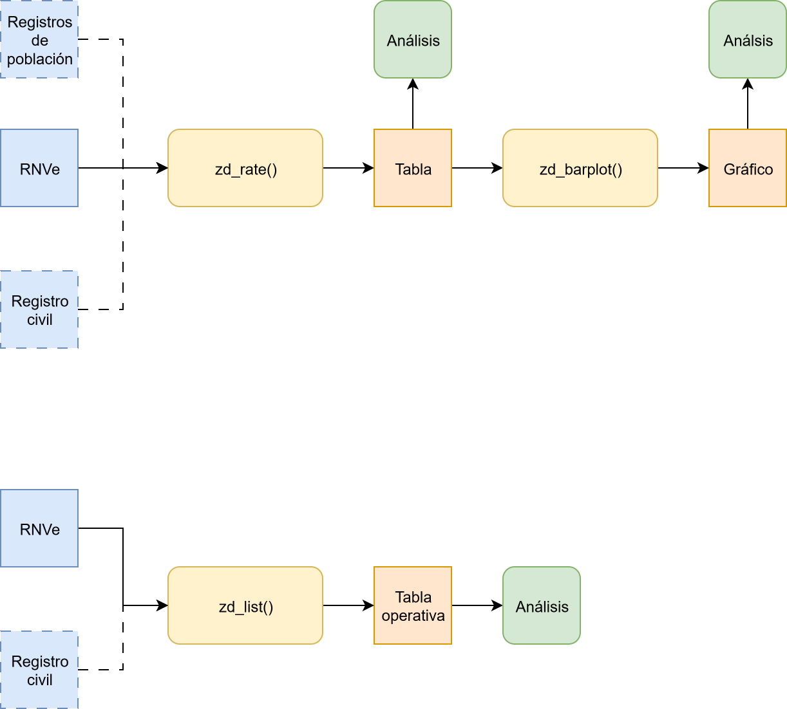
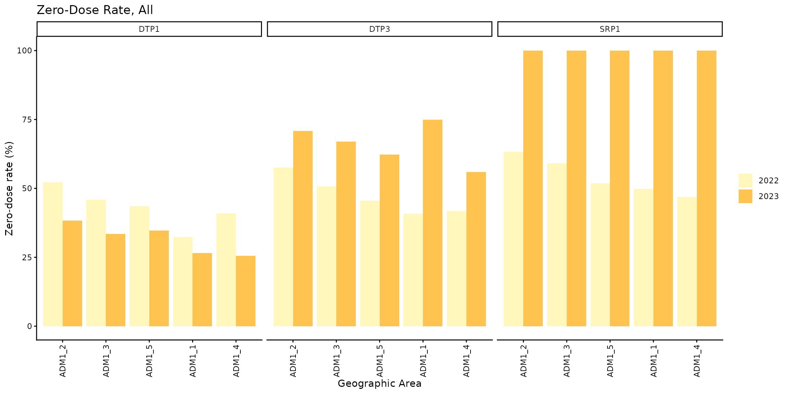
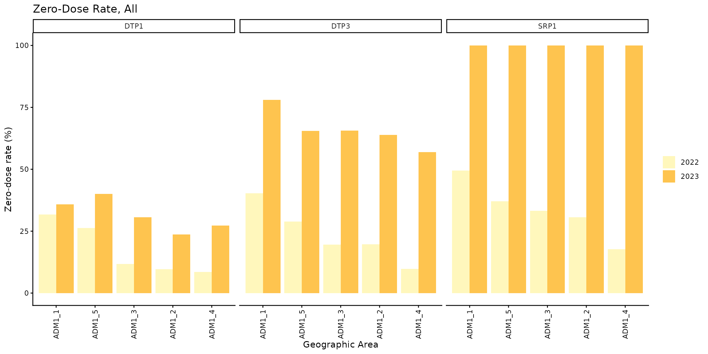
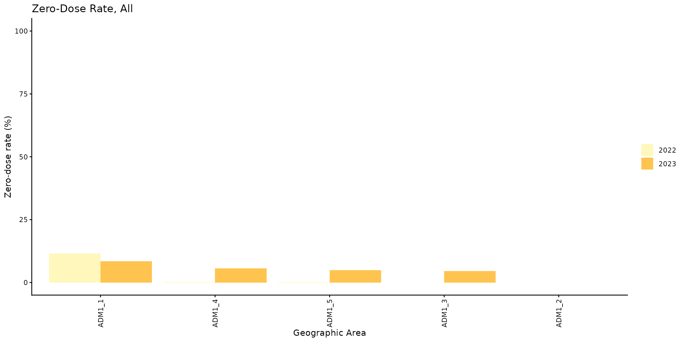

Tasa de cero dosis
Indicador UD 2.9
OPS/CIM
20 de noviembre de 2026
Source:vignettes/articles/es/zero_dose_es.Rmd
zero_dose_es.RmdFundamento
El objetivo de este indicador es identificar a las personas que no tienen registro de haber recibido un conjunto determinado de vacunas, conocidas como personas cero dosis. Son las más expuestas a las enfermedades prevenibles por vacunación y suelen pertenecer a comunidades a las que el programa de inmunización no está llegando. Saber cuántas son, dónde viven y, cuando se dispone de registros individuales, quiénes son, permite al programa planificar estrategias focalizadas para alcanzarlas.
La tasa de cero dosis es el complemento de la cobertura para una cohorte de nacimiento específica:
El total de personas en la cohorte de nacimiento (el denominador) se toma de la fuente más detallada disponible:
- Los registros poblacionales individuales
(
data.pop_ids), si se proporcionan. Estos tienen prioridad sobre cualquier otra fuente. - En su defecto, una tabla de población (
data.pop), si se proporciona. - En su defecto, las personas que figuran en el propio RNVe.
Nota
Todas las funciones utilizadas para los análisis de cero dosis dentro de immunABC comienzan con el prefijo
zd_.
Glosario
Cero dosis
Una persona cero dosis es aquella que no tiene registro de haber recibido una vacuna determinada. Cuando el análisis abarca varias vacunas a la vez, una persona cero dosis es aquella que no tiene registro de ninguna de ellas.
Cohorte de nacimiento
Una cohorte de nacimiento es el grupo de todas las personas nacidas dentro de un mismo período de tiempo, normalmente un único año calendario. Por ejemplo, la cohorte de nacimiento de 2022 comprende a todas las personas nacidas durante el año 2022.
Divisiones político-geográficas
A lo largo de esta viñeta se hace referencia a distintos niveles de división político-geográfica. Estos niveles son definidos por cada país o territorio y pueden recibir nombres diferentes. immunABC no depende de esos nombres locales; por eso, el usuario debe recodificar sus variables para ajustarlas a la estructura que utiliza el paquete.
En concreto, immunABC puede distinguir tres niveles administrativos que, listados del nivel superior al inferior, son: ADM0, ADM1 y ADM2.
- ADM0: El país. Este es el nivel administrativo más alto.
- ADM1: La primera subdivisión geográfica del país. ADM0 contiene varias subdivisiones ADM1.
- ADM2: La segunda subdivisión geográfica del país. Cada ADM1 contiene varias subdivisiones ADM2.
Nombres de vacunas
Los conjuntos de datos de ejemplo utilizan una convención específica para nombrar las dosis de vacunas. Es posible que esta convención no coincida con la que usa su país o institución, pero esto no afecta el uso del paquete si los nombres se aplican de manera consistente.
Por ejemplo, los nombres de las vacunas utilizados en el paquete immunABC son:
| Abreviatura | Nombre completo |
|---|---|
| SRP1 | Vacuna contra sarampión, rubéola y paperas (1.ª dosis) |
| DTP1 | Vacuna contra difteria, tétanos y tos ferina (1.ª dosis) |
| DTP2 | Vacuna contra difteria, tétanos y tos ferina (2.ª dosis) |
| DTP3 | Vacuna contra difteria, tétanos y tos ferina (3.ª dosis) |
| BCG RN | Vacuna Bacillus Calmette–Guérin (al nacer) |
| YFV1 | Vacuna contra la fiebre amarilla (1.ª dosis) |
Uso
Instalar el paquete
El primer paso para ejecutar los análisis de cero dosis es instalar el paquete immunABC disponible en GitHub.
devtools::install_github("IM-Data-PAHO/immunabc")Cargar los datos
Las funciones de este módulo trabajan con hasta tres conjuntos de datos en un formato específico.
- Su RNVe.
- Opcionalmente, una tabla con denominadores poblacionales al mismo nivel geográfico de desagregación que su análisis.
- Opcionalmente, una tabla de registros poblacionales individuales, como un registro civil, que pueda cruzarse con el RNVe.
Para facilitar la prueba de immunABC y la comprensión de la estructura requerida, a continuación se presentan los conjuntos de datos de ejemplo que utiliza este módulo.
RNVe
El conjunto de datos immunabc::immunABC.EIR proporciona
un ejemplo de Registro Nominal de Vacunación electrónico (RNVe). Es una
tabla nominal simulada con eventos individuales de vacunación. Cada fila
corresponde a una vacunación e incluye información sobre la residencia
de la persona, el lugar donde fue vacunada (ocurrencia), su fecha de
nacimiento y la dosis recibida.
immunABC.EIR %>% head() %>% kable(caption = "Ejemplo de Registro Nominal de Vacunación electrónico")| ID | date_birth | date_vax | ADM1_residence | ADM2_residence | ADM1_occurrence | ADM2_occurrence | dose |
|---|---|---|---|---|---|---|---|
| 191997 | 2023-08-08 | 2023-12-26 | ADM1_4 | ADM2_4_35 | ADM1_4 | ADM2_4_35 | DTP2 |
| 212189 | 2023-12-20 | 2023-12-26 | ADM1_5 | ADM2_5_61 | ADM1_5 | ADM2_5_61 | BCG RN |
| 118063 | 2022-09-15 | 2023-12-26 | ADM1_2 | ADM2_2_5 | ADM1_2 | ADM2_2_5 | DTP1 |
| 118063 | 2022-09-15 | 2023-12-26 | ADM1_2 | ADM2_2_5 | ADM1_2 | ADM2_2_5 | YFV1 |
| 130751 | 2022-10-27 | 2023-12-12 | ADM1_5 | ADM2_5_55 | ADM1_5 | ADM2_5_55 | YFV1 |
| 136532 | 2021-09-21 | 2023-12-26 | ADM1_3 | ADM2_3_12 | ADM1_3 | ADM2_3_12 | SRP1 |
-
ID: Número único de identificación de la persona. - Fecha de nacimiento (
date_birth): Fecha de nacimiento de la persona. - Fecha de vacunación (
date_vax): Fecha del evento de vacunación. - ADM1: Primer nivel administrativo geográfico del país.
- ADM2: Segundo nivel administrativo geográfico del país.
- Lugar de residencia (
Residence): Lugar donde vive la persona. - Lugar de vacunación (
Occurrence): Lugar donde ocurrió la vacunación. - Dosis (
dose): Variable combinada que representa el tipo de vacuna y su número de dosis correspondiente. Por ejemplo, DTP1 se refiere a la primera dosis de una vacuna que contiene componentes de difteria, tétanos y tos ferina.
Denominadores poblacionales
Aunque no es obligatorio, este módulo permite usar una tabla de población como denominador. El nivel geográfico de esta tabla debe coincidir con el nivel geográfico del análisis. Por ejemplo, para un análisis a nivel ADM1, la tabla de denominadores poblacionales debe tener la siguiente estructura.
immunABC.pop.ADM1 %>% head() %>% kable(caption = "Ejemplo de población a nivel ADM1")| ADM1 | year | age | population |
|---|---|---|---|
| ADM1_1 | 2022 | 0 | 1718.189 |
| ADM1_1 | 2022 | 1 | 1808.964 |
| ADM1_1 | 2023 | 0 | 1703.145 |
| ADM1_1 | 2023 | 1 | 1792.443 |
| ADM1_2 | 2022 | 0 | 6575.261 |
| ADM1_2 | 2022 | 1 | 6922.644 |
Esta tabla está en formato largo y contiene la población
(population) de niños de una edad (age)
específica durante un año (year) determinado para un nivel
ADM1.
Nota
Como este análisis se realiza con cohortes de nacimiento, solo se usan las filas donde la edad (
age) es igual a 0 en la tabla de población. Estas filas representan el número de niños que pertenecen a esa cohorte de nacimiento.
Registros poblacionales individuales
También de forma opcional, este módulo permite usar una tabla de
registros poblacionales individuales. Como cada fila es una persona, el
módulo puede contar a las personas que faltan en el RNVe y listar a cada
una de ellas. El conjunto de datos
immunabc::immunABC.pop_ids_expanded_to_pop contiene a todas
las personas de immunABC.EIR, más personas simuladas sin
registros de vacunación, de modo que cada cohorte de nacimiento coincide
con la población de immunABC.pop.ADM2.
immunABC.pop_ids_expanded_to_pop %>% head() %>% kable(caption = "Ejemplo de registros poblacionales individuales")| ID | date_birth | ADM1_residence | ADM2_residence | name |
|---|---|---|---|---|
| 1 | 2013-12-14 | ADM1_2 | ADM2_2_5 | Dion Rodriguez Romo |
| 2 | 1998-12-21 | ADM1_3 | ADM2_3_8 | Henry Hernandez Contreras |
| 3 | 1986-12-02 | ADM1_3 | ADM2_3_16 | Moses Torres Martinez |
| 4 | 1986-06-07 | ADM1_3 | ADM2_3_17 | Keylian Saldana Wilson |
| 5 | 1958-09-10 | ADM1_3 | ADM2_3_13 | Berenise Salazar Bautista Rubio |
| 6 | 2017-09-18 | ADM1_2 | ADM2_2_5 | Rocela Cazares Medina |
-
ID: Número único de identificación de la persona. Debe coincidir con elIDutilizado en el RNVe. - Nombre (
name): Nombre de la persona. - Fecha de nacimiento (
date_birth): Fecha de nacimiento de la persona. -
ADM1_residence/ADM2_residence: Primer y segundo nivel administrativo geográfico de residencia de la persona.
Nota
Las personas simuladas sin registros de vacunación solo se agregaron a las cohortes de nacimiento de 2022 y 2023. Este conjunto de datos se construyó para coincidir con
immunABC.pop.ADM2, y las tablas de población de ejemplo solo contienen la población de esas dos cohortes de nacimiento. Las personas nacidas en cualquier otro año provienen únicamente del RNVe, por lo que todas tienen al menos un registro de vacunación.
Análisis de cero dosis
Este módulo permite estimar la tasa de cero dosis por cohorte de
nacimiento para cualquier vacuna, o para un conjunto de vacunas a la
vez. El indicador representa el porcentaje de personas nacidas en un año
específico que no tienen registro de la vacuna, independientemente de
cuándo debieron haber sido vacunadas. Los resultados pueden agregarse a
nivel nacional o subnacional (ADM1 o
ADM2).
Cuando se dispone de registros individuales (solo el RNVe, o
data.pop_ids), el módulo también puede producir una salida
operativa: una fila por persona, con la fecha de cada vacuna y una
columna Category. Al filtrar esta tabla por
ZERO_DOSE se obtiene la lista de personas cero dosis a las
que dar seguimiento.
Flujo de trabajo esperado
Las funciones zd_rate(), zd_barplot() y
zd_list() permiten analizar, visualizar y actuar sobre la
tasa de cero dosis. Su relación se muestra en la Figura 1.

-
zd_rate()calcula la tasa de cero dosis por vacuna, cohorte de nacimiento y área geográfica. Cuando no se especifican vacunas (vaccines), también incluye las filas condose“All”, que cuentan como vacunadas a las personas con al menos una vacuna. -
zd_barplot()recibe el resultado dezd_rate()y muestra un panel por vacuna. Cuandozd_rate()se ejecutó sin especificar vacunas, muestra en su lugar la tasa combinada “All”. Si un grupo tiene más personas vacunadas que población, su tasa es negativa; la barra muestra su valor absoluto con un contorno rojo. -
zd_list()produce la salida operativa: una fila por persona, tomada dedata.pop_idsy del RNVe si se proporcionadata.pop_ids, o del RNVe en caso contrario, con la fecha de cada vacuna y una columnaCategory:COMPLETEsi la persona tiene todas las vacunas analizadas,PARTIALsi tiene algunas yZERO_DOSEsi no tiene ninguna. Como lista personas, no utiliza tablas de población.
Ejemplo 1: Solo el RNVe
A continuación se calcula la tasa de cero dosis para la primera y la tercera dosis de DTP y la primera dosis de la vacuna que contiene sarampión, para las cohortes de nacimiento de 2022 y 2023, usando solo el RNVe. Por lo tanto, el denominador son las personas que figuran en el RNVe.
# calcular la tasa de cero dosis
zd_eir <- zd_rate(
data.EIR = immunABC.EIR,
geo_level = "ADM1",
vaccines = c("DTP1", "DTP3", "SRP1"), # esto puede ser una sola vacuna
birth_cohorts = c(2022, 2023) # esto puede ser un solo año
)
# mostrar la tasa en una tabla
zd_eir %>%
kable(digits = 2, caption = "Tasa de cero dosis a nivel ADM1")| dose | birth_cohort | ADM1 | numerator | population | coverage | zd_rate |
|---|---|---|---|---|---|---|
| DTP1 | 2022 | ADM1_1 | 1173 | 1733 | 67.69 | 32.31 |
| DTP1 | 2022 | ADM1_2 | 5939 | 12428 | 47.79 | 52.21 |
| DTP1 | 2022 | ADM1_3 | 27168 | 50238 | 54.08 | 45.92 |
| DTP1 | 2022 | ADM1_4 | 3768 | 6382 | 59.04 | 40.96 |
| DTP1 | 2022 | ADM1_5 | 1969 | 3488 | 56.45 | 43.55 |
| DTP1 | 2023 | ADM1_1 | 1093 | 1488 | 73.45 | 26.55 |
| DTP1 | 2023 | ADM1_2 | 4979 | 8066 | 61.73 | 38.27 |
| DTP1 | 2023 | ADM1_3 | 21154 | 31819 | 66.48 | 33.52 |
| DTP1 | 2023 | ADM1_4 | 2968 | 3984 | 74.50 | 25.50 |
| DTP1 | 2023 | ADM1_5 | 1585 | 2426 | 65.33 | 34.67 |
| DTP3 | 2022 | ADM1_1 | 1025 | 1733 | 59.15 | 40.85 |
| DTP3 | 2022 | ADM1_2 | 5279 | 12428 | 42.48 | 57.52 |
| DTP3 | 2022 | ADM1_3 | 24746 | 50238 | 49.26 | 50.74 |
| DTP3 | 2022 | ADM1_4 | 3716 | 6382 | 58.23 | 41.77 |
| DTP3 | 2022 | ADM1_5 | 1900 | 3488 | 54.47 | 45.53 |
| DTP3 | 2023 | ADM1_1 | 374 | 1488 | 25.13 | 74.87 |
| DTP3 | 2023 | ADM1_2 | 2353 | 8066 | 29.17 | 70.83 |
| DTP3 | 2023 | ADM1_3 | 10498 | 31819 | 32.99 | 67.01 |
| DTP3 | 2023 | ADM1_4 | 1756 | 3984 | 44.08 | 55.92 |
| DTP3 | 2023 | ADM1_5 | 914 | 2426 | 37.68 | 62.32 |
| SRP1 | 2022 | ADM1_1 | 869 | 1733 | 50.14 | 49.86 |
| SRP1 | 2022 | ADM1_2 | 4564 | 12428 | 36.72 | 63.28 |
| SRP1 | 2022 | ADM1_3 | 20552 | 50238 | 40.91 | 59.09 |
| SRP1 | 2022 | ADM1_4 | 3388 | 6382 | 53.09 | 46.91 |
| SRP1 | 2022 | ADM1_5 | 1679 | 3488 | 48.14 | 51.86 |
| SRP1 | 2023 | ADM1_1 | 0 | 1488 | 0.00 | 100.00 |
| SRP1 | 2023 | ADM1_2 | 2 | 8066 | 0.02 | 99.98 |
| SRP1 | 2023 | ADM1_3 | 5 | 31819 | 0.02 | 99.98 |
| SRP1 | 2023 | ADM1_4 | 0 | 3984 | 0.00 | 100.00 |
| SRP1 | 2023 | ADM1_5 | 1 | 2426 | 0.04 | 99.96 |
Parámetros aceptados en zd_rate()
-
data.EIR: Data frame del RNVe en formato immunABC. -
geo_level:"ADM0"(predeterminado),"ADM1"o"ADM2". -
vaccines: Vector de caracteres con las dosis a incluir, una tasa pordose. El valor predeterminadoNULLincluye todas las dosis dedata.EIRy agrega las filas combinadas “All”. -
birth_cohorts: Vector numérico con el año o los años de las cohortes de nacimiento a incluir. El valor predeterminadoNULLincluye a todas las personas, independientemente de su año de nacimiento. -
data.pop: Denominadores poblacionales al mismo nivel geográfico quegeo_level. Predeterminado:NULL. Vea el Ejemplo 2. -
data.pop_ids: Registros poblacionales individuales, usados como denominadores en lugar dedata.popo del RNVe. Su residencia nunca se modifica: cuandogeo_leveles"ADM1"o"ADM2", una advertencia indica las personas cuya residencia no coincide con la del RNVe, que deben corregirse antes de ejecutar el análisis. Predeterminado:NULL. Vea el Ejemplo 3. -
fix_residence: Cuandogeo_leveles"ADM1"o"ADM2", cada persona del RNVe debe tener una única residencia para que se cuente en una sola área.TRUE(predeterminado) asigna a las personas con más de una residencia la residencia de su vacunación más reciente, con una advertencia;FALSEdetiene la ejecución con un error.
Estos resultados se pueden visualizar con la función
zd_barplot(), como se muestra a continuación.
# visualizar el resultado de zd_rate()
zd_eir_plot <- zd_barplot(data = zd_eir)
# mostrar
zd_eir_plot
Parámetros aceptados en zd_barplot()
-
data: Resultado dezd_rate(). -
vaccine: Vector de caracteres con las dosis a mostrar, un panel pordose. El valor predeterminadoNULLmuestra la tasa combinada “All” si está presente endata, o todas las dosis en caso contrario. -
birth_cohorts: Vector numérico con hasta 9 años de cohortes de nacimiento a mostrar. El valor predeterminadoNULLmuestra las 9 cohortes más recientes dedata. -
within_ADM1: Vector de caracteres para filtrar unidades ADM1 específicas cuandodataestá a nivel ADM2. Predeterminado:NULL. -
palette: Paleta de RColorBrewer para los colores de las cohortes de nacimiento. Predeterminado:"YlOrBr".
Como todas las personas del RNVe tienen al menos un registro de vacunación, las tasas muestran a quién le falta cada vacuna específica, no quién no tiene ninguna vacuna. La comparación entre paneles muestra qué vacunas dejan atrás a más personas en cada área.
La salida operativa, producida por zd_list(), lista a
cada persona del RNVe con la fecha de cada vacuna analizada.
# listar a cada persona y sus vacunas
zd_eir_list <- zd_list(
data.EIR = immunABC.EIR,
vaccines = c("DTP1", "DTP3", "SRP1"),
birth_cohorts = c(2022, 2023)
)
# mostrar las primeras filas
zd_eir_list %>% head(10) %>% kable(caption = "Salida operativa")| ID | date_birth | ADM1_residence | ADM2_residence | DTP1 | DTP3 | SRP1 | Category |
|---|---|---|---|---|---|---|---|
| 569 | 2022-07-28 | ADM1_2 | ADM2_2_5 | 2022-10-25 | 2023-11-17 | 2023-11-17 | COMPLETE |
| 1843 | 2022-06-21 | ADM1_3 | ADM2_3_15 | NA | 2022-02-08 | 2022-12-06 | PARTIAL |
| 2399 | 2022-03-05 | ADM1_3 | ADM2_3_16 | NA | NA | 2023-03-10 | PARTIAL |
| 2736 | 2022-02-07 | ADM1_2 | ADM2_2_5 | 2022-04-11 | 2022-08-23 | 2023-02-22 | COMPLETE |
| 3074 | 2022-03-30 | ADM1_2 | ADM2_2_5 | NA | 2022-11-14 | 2023-05-24 | PARTIAL |
| 3520 | 2022-07-04 | ADM1_2 | ADM2_2_5 | 2022-09-04 | 2023-03-05 | NA | PARTIAL |
| 3717 | 2022-03-30 | ADM1_3 | ADM2_3_13 | 2022-06-18 | 2022-10-04 | 2023-05-19 | COMPLETE |
| 4022 | 2022-01-14 | ADM1_3 | ADM2_3_14 | 2022-03-21 | NA | NA | PARTIAL |
| 4121 | 2022-04-18 | ADM1_2 | ADM2_2_5 | 2022-06-18 | NA | NA | PARTIAL |
| 5102 | 2022-06-26 | ADM1_3 | ADM2_3_20 | 2022-09-05 | 2023-01-03 | NA | PARTIAL |
Parámetros aceptados en zd_list()
-
data.EIR: Data frame del RNVe en formato immunABC. -
vaccines: Vector de caracteres con las dosis a incluir, una columna de fecha pordose. El valor predeterminadoNULLincluye todas las dosis dedata.EIR. -
birth_cohorts: Vector numérico con el año o los años de nacimiento de las personas a listar. El valor predeterminadoNULLlista a todas las personas, independientemente de su año de nacimiento. -
data.pop_ids: Registros poblacionales individuales. Si se proporcionan, se lista a cada persona de ellos, más las personas del RNVe que no figuran en ellos, y la salida incluye las columnasnameySource. El valor predeterminadoNULLlista a las personas del RNVe. Vea el Ejemplo 3. Su residencia nunca se modifica; una advertencia indica las personas cuya residencia no coincide con la del RNVe, que deben corregirse antes de ejecutar el análisis. -
fix_residence: Cada persona del RNVe debe tener una única residencia.TRUE(predeterminado) asigna a las personas con más de una residencia la residencia de su vacunación más reciente, con una advertencia;FALSEdetiene la ejecución con un error.
Nota
La tabla de población (
data.pop) o los registros poblacionales individuales (data.pop_ids) pueden abarcar menos personas que el RNVe, por ejemplo si les faltan algunas cohortes de nacimiento, algunas áreas geográficas o algunas de las personas registradas en el RNVe. Cada función maneja este caso de la siguiente manera:
zd_rate()siempre cuenta a las personas vacunadas a partir del RNVe, estén o no en los denominadores. Las cohortes de nacimiento o áreas que figuran en el RNVe pero faltan en los denominadores se conservan, con población, cobertura y tasa de cero dosisNA. Si un grupo tiene más personas vacunadas en el RNVe que en su denominador, su cobertura supera el 100%, su tasa de cero dosis se vuelve negativa y se muestra una advertencia.zd_barplot()excluye las filas con tasa de cero dosisNAy muestra las tasas negativas con su valor absoluto y un contorno rojo, agregando una nota al pie del gráfico.zd_list()lista a cada persona dedata.pop_ids, más las personas del RNVe que no figuran en ellos. Estas personas no tienen nombre (name), su fecha de nacimiento se toma de su primer registro en el RNVe y su residencia, de su vacunación más reciente, y su columnaSourceesEIR_ONLYen lugar dePOP_IDS. Una advertencia indica cuántas son. Sindata.pop_idslista a todas las personas del RNVe, y nunca utilizadata.pop.
Ejemplo 2: RNVe y denominadores poblacionales
A continuación se calculan las tasas para las mismas vacunas y cohortes de nacimiento, pero los denominadores se toman de la tabla de población a nivel ADM1. Como no tiene registros individuales, no hay salida operativa.
# calcular la tasa de cero dosis
zd_pop <- zd_rate(
data.EIR = immunABC.EIR,
geo_level = "ADM1",
vaccines = c("DTP1", "DTP3", "SRP1"),
birth_cohorts = c(2022, 2023),
data.pop = immunABC.pop.ADM1
)
# mostrar la tasa en una tabla
zd_pop %>%
kable(digits = 2, caption = "Tasa de cero dosis a nivel ADM1, con denominadores poblacionales")| dose | birth_cohort | ADM1 | numerator | population | coverage | zd_rate |
|---|---|---|---|---|---|---|
| DTP1 | 2022 | ADM1_1 | 1173 | 1718.19 | 68.27 | 31.73 |
| DTP1 | 2022 | ADM1_2 | 5939 | 6575.26 | 90.32 | 9.68 |
| DTP1 | 2022 | ADM1_3 | 27168 | 30766.52 | 88.30 | 11.70 |
| DTP1 | 2022 | ADM1_4 | 3768 | 4117.38 | 91.51 | 8.49 |
| DTP1 | 2022 | ADM1_5 | 1969 | 2669.37 | 73.76 | 26.24 |
| DTP1 | 2023 | ADM1_1 | 1093 | 1703.14 | 64.18 | 35.82 |
| DTP1 | 2023 | ADM1_2 | 4979 | 6517.69 | 76.39 | 23.61 |
| DTP1 | 2023 | ADM1_3 | 21154 | 30497.13 | 69.36 | 30.64 |
| DTP1 | 2023 | ADM1_4 | 2968 | 4081.33 | 72.72 | 27.28 |
| DTP1 | 2023 | ADM1_5 | 1585 | 2645.99 | 59.90 | 40.10 |
| DTP3 | 2022 | ADM1_1 | 1025 | 1718.19 | 59.66 | 40.34 |
| DTP3 | 2022 | ADM1_2 | 5279 | 6575.26 | 80.29 | 19.71 |
| DTP3 | 2022 | ADM1_3 | 24746 | 30766.52 | 80.43 | 19.57 |
| DTP3 | 2022 | ADM1_4 | 3716 | 4117.38 | 90.25 | 9.75 |
| DTP3 | 2022 | ADM1_5 | 1900 | 2669.37 | 71.18 | 28.82 |
| DTP3 | 2023 | ADM1_1 | 374 | 1703.14 | 21.96 | 78.04 |
| DTP3 | 2023 | ADM1_2 | 2353 | 6517.69 | 36.10 | 63.90 |
| DTP3 | 2023 | ADM1_3 | 10498 | 30497.13 | 34.42 | 65.58 |
| DTP3 | 2023 | ADM1_4 | 1756 | 4081.33 | 43.03 | 56.97 |
| DTP3 | 2023 | ADM1_5 | 914 | 2645.99 | 34.54 | 65.46 |
| SRP1 | 2022 | ADM1_1 | 869 | 1718.19 | 50.58 | 49.42 |
| SRP1 | 2022 | ADM1_2 | 4564 | 6575.26 | 69.41 | 30.59 |
| SRP1 | 2022 | ADM1_3 | 20552 | 30766.52 | 66.80 | 33.20 |
| SRP1 | 2022 | ADM1_4 | 3388 | 4117.38 | 82.29 | 17.71 |
| SRP1 | 2022 | ADM1_5 | 1679 | 2669.37 | 62.90 | 37.10 |
| SRP1 | 2023 | ADM1_1 | 0 | 1703.14 | 0.00 | 100.00 |
| SRP1 | 2023 | ADM1_2 | 2 | 6517.69 | 0.03 | 99.97 |
| SRP1 | 2023 | ADM1_3 | 5 | 30497.13 | 0.02 | 99.98 |
| SRP1 | 2023 | ADM1_4 | 0 | 4081.33 | 0.00 | 100.00 |
| SRP1 | 2023 | ADM1_5 | 1 | 2645.99 | 0.04 | 99.96 |
Parámetros aceptados en zd_rate()
Los mismos que en el Ejemplo 1. Aquí, data.pop
proporciona los denominadores:
-
data.pop: Denominadores poblacionales en formato largo, al mismo nivel geográfico quegeo_level. Solo se usan las filas conageigual a 0, como la población de cada cohorte de nacimiento.
# visualizar el resultado de zd_rate()
zd_pop_plot <- zd_barplot(data = zd_pop)
# mostrar
zd_pop_plot
Ejemplo 3: RNVe y registros poblacionales individuales
A continuación, se usan los registros poblacionales individuales como denominadores, sin especificar vacunas. La tasa incluye entonces las filas combinadas “All”, y la salida operativa lista a cada persona de los registros poblacionales.
# calcular la tasa de cero dosis
zd_ids <- zd_rate(
data.EIR = immunABC.EIR,
geo_level = "ADM1",
birth_cohorts = c(2022, 2023),
data.pop_ids = immunABC.pop_ids_expanded_to_pop
)
# mostrar la tasa combinada en una tabla
zd_ids %>%
filter(dose == "All") %>%
kable(digits = 2, caption = "Tasa de cero dosis para todas las vacunas a nivel ADM1, con registros poblacionales individuales")| dose | birth_cohort | ADM1 | numerator | population | coverage | zd_rate |
|---|---|---|---|---|---|---|
| All | 2022 | ADM1_1 | 1733 | 1960 | 88.42 | 11.58 |
| All | 2022 | ADM1_2 | 12428 | 12428 | 100.00 | 0.00 |
| All | 2022 | ADM1_3 | 50238 | 50238 | 100.00 | 0.00 |
| All | 2022 | ADM1_4 | 6382 | 6392 | 99.84 | 0.16 |
| All | 2022 | ADM1_5 | 3488 | 3496 | 99.77 | 0.23 |
| All | 2023 | ADM1_1 | 1488 | 1626 | 91.51 | 8.49 |
| All | 2023 | ADM1_2 | 8066 | 8066 | 100.00 | 0.00 |
| All | 2023 | ADM1_3 | 31819 | 33334 | 95.46 | 4.54 |
| All | 2023 | ADM1_4 | 3984 | 4221 | 94.39 | 5.61 |
| All | 2023 | ADM1_5 | 2426 | 2552 | 95.06 | 4.94 |
Parámetros aceptados en zd_rate()
Los mismos que en el Ejemplo 1. Aquí, data.pop_ids
proporciona los denominadores y no se especifica
vaccines:
-
data.pop_ids: Registros poblacionales individuales en formato immunABC, con una fila por persona. Tienen prioridad sobredata.popy sobre el RNVe como denominadores. -
vaccines: Con el valor predeterminadoNULL, se incluyen todas las dosis dedata.EIRy se agregan las filas combinadas “All”.
# visualizar el resultado de zd_rate()
zd_ids_plot <- zd_barplot(data = zd_ids)
# mostrar
zd_ids_plot
Parámetros aceptados en zd_barplot()
Los mismos que en el Ejemplo 1. Como no se especifica
vaccine y zd_ids contiene las filas “All”, el
gráfico muestra la tasa combinada.
La salida operativa ahora incluye el nombre de cada persona, a las
personas sin ningún registro de vacunación y una columna
Source que indica si cada persona se encontró en los
registros poblacionales (POP_IDS) o solo en el RNVe
(EIR_ONLY). Todas las personas del RNVe de ejemplo también
figuran en immunABC.pop_ids_expanded_to_pop, por lo que
aquí todas las filas son POP_IDS.
# listar a cada persona y sus vacunas
zd_ids_list <- zd_list(
data.EIR = immunABC.EIR,
birth_cohorts = c(2022, 2023),
data.pop_ids = immunABC.pop_ids_expanded_to_pop
)
# mostrar las primeras filas
zd_ids_list %>% head(10) %>% kable(caption = "Salida operativa")| ID | name | date_birth | ADM1_residence | ADM2_residence | DTP2 | BCG RN | DTP1 | YFV1 | DTP3 | SRP1 | Category | Source |
|---|---|---|---|---|---|---|---|---|---|---|---|---|
| 569 | Estibali Buenrostro Juarez Subia | 2022-07-28 | ADM1_2 | ADM2_2_5 | 2023-01-25 | NA | 2022-10-25 | 2023-11-17 | 2023-11-17 | 2023-11-17 | PARTIAL | POP_IDS |
| 1843 | Trevaughn Andrade Jr Colon | 2022-06-21 | ADM1_3 | ADM2_3_15 | NA | NA | NA | 2022-12-06 | 2022-02-08 | 2022-12-06 | PARTIAL | POP_IDS |
| 2399 | Yolanda Vera Reyes | 2022-03-05 | ADM1_3 | ADM2_3_16 | 2022-07-08 | NA | NA | 2023-03-10 | NA | 2023-03-10 | PARTIAL | POP_IDS |
| 2736 | Graciela Salcido Spurr Zayas | 2022-02-07 | ADM1_2 | ADM2_2_5 | 2022-06-07 | 2022-02-21 | 2022-04-11 | 2023-02-22 | 2022-08-23 | 2023-02-22 | COMPLETE | POP_IDS |
| 3074 | Arnoldo Grijalva Kutcher | 2022-03-30 | ADM1_2 | ADM2_2_5 | NA | NA | NA | 2023-07-06 | 2022-11-14 | 2023-05-24 | PARTIAL | POP_IDS |
| 3520 | Brenda Padilla Medina | 2022-07-04 | ADM1_2 | ADM2_2_5 | 2023-01-08 | NA | 2022-09-04 | NA | 2023-03-05 | NA | PARTIAL | POP_IDS |
| 3717 | Sol Nallely Sabino Sanchez | 2022-03-30 | ADM1_3 | ADM2_3_13 | NA | NA | 2022-06-18 | 2023-05-19 | 2022-10-04 | 2023-05-19 | PARTIAL | POP_IDS |
| 4022 | James Garibay Cline | 2022-01-14 | ADM1_3 | ADM2_3_14 | NA | NA | 2022-03-21 | NA | NA | NA | PARTIAL | POP_IDS |
| 4121 | Anthony Reyes Rodriguez | 2022-04-18 | ADM1_2 | ADM2_2_5 | 2022-08-19 | NA | 2022-06-18 | NA | NA | NA | PARTIAL | POP_IDS |
| 5102 | Andrea Salazar Garcia | 2022-06-26 | ADM1_3 | ADM2_3_20 | 2022-11-07 | NA | 2022-09-05 | NA | 2023-01-03 | NA | PARTIAL | POP_IDS |
Parámetros aceptados en zd_list()
Los mismos que en el Ejemplo 1. Aquí, data.pop_ids
proporciona las personas a listar:
-
data.pop_ids: Registros poblacionales individuales en formato immunABC. Se lista a cada persona, incluidas las que no tienen registros en el RNVe, y la salida incluye su nombre (name). Las personas del RNVe que no figuran en ellos también se listan, sin nombre y conSourceigual aEIR_ONLY.
Al filtrarla por Category == "ZERO_DOSE" se obtiene la
lista de personas cero dosis a las que dar seguimiento.
zd_ids_list %>%
filter(Category == "ZERO_DOSE") %>%
head(10) %>%
kable(caption = "Salida operativa: personas cero dosis")| ID | name | date_birth | ADM1_residence | ADM2_residence | DTP2 | BCG RN | DTP1 | YFV1 | DTP3 | SRP1 | Category | Source |
|---|---|---|---|---|---|---|---|---|---|---|---|---|
| 214031 | Mayra Flores Montoya | 2022-04-06 | ADM1_1 | ADM2_1_1 | NA | NA | NA | NA | NA | NA | ZERO_DOSE | POP_IDS |
| 214032 | Kevin Lucero Lovato | 2022-04-06 | ADM1_1 | ADM2_1_1 | NA | NA | NA | NA | NA | NA | ZERO_DOSE | POP_IDS |
| 214033 | Celeste Sierra Hagler | 2022-05-01 | ADM1_1 | ADM2_1_1 | NA | NA | NA | NA | NA | NA | ZERO_DOSE | POP_IDS |
| 214034 | Lisbeth Gamma Myers | 2022-10-11 | ADM1_1 | ADM2_1_1 | NA | NA | NA | NA | NA | NA | ZERO_DOSE | POP_IDS |
| 214035 | Fatima Caraveo Borrego | 2022-05-17 | ADM1_1 | ADM2_1_1 | NA | NA | NA | NA | NA | NA | ZERO_DOSE | POP_IDS |
| 214036 | Monique Marvin Saiz | 2022-01-05 | ADM1_1 | ADM2_1_1 | NA | NA | NA | NA | NA | NA | ZERO_DOSE | POP_IDS |
| 214037 | Joe Castillo Haro | 2022-09-28 | ADM1_1 | ADM2_1_1 | NA | NA | NA | NA | NA | NA | ZERO_DOSE | POP_IDS |
| 214038 | Melissa Accaira Archuleta | 2022-03-10 | ADM1_1 | ADM2_1_1 | NA | NA | NA | NA | NA | NA | ZERO_DOSE | POP_IDS |
| 214039 | Samuel Barron Lovato | 2022-04-08 | ADM1_1 | ADM2_1_1 | NA | NA | NA | NA | NA | NA | ZERO_DOSE | POP_IDS |
| 214040 | Pilar Razo Munoz Camacho Gutierrez | 2022-11-14 | ADM1_1 | ADM2_1_1 | NA | NA | NA | NA | NA | NA | ZERO_DOSE | POP_IDS |
Ejemplo 4: Registros poblacionales individuales sin seleccionar cohortes de nacimiento
birth_cohorts es opcional. Cuando no se especifica, se
incluye a todas las personas, independientemente de cuándo nacieron. A
continuación se repite el Ejemplo 3 sin este argumento.
# calcular la tasa y la lista de cero dosis para todas las cohortes de nacimiento
zd_all <- zd_rate(
data.EIR = immunABC.EIR,
geo_level = "ADM1",
data.pop_ids = immunABC.pop_ids_expanded_to_pop
)
zd_all_list <- zd_list(
data.EIR = immunABC.EIR,
data.pop_ids = immunABC.pop_ids_expanded_to_pop
)Las tablas con los resultados de esta ejecución no se muestran. Para las cohortes de nacimiento de 2022 y 2023 contienen los mismos resultados que el Ejemplo 3, y al agregar todas las demás cohortes de nacimiento son demasiado grandes para mostrarlas en este artículo.
Parámetros aceptados en zd_rate() y
zd_list()
Los mismos que en el Ejemplo 3, excepto
birth_cohorts:
-
birth_cohorts: No se especifica, por lo que con el valor predeterminadoNULLambas funciones incluyen a todas las personas dedata.pop_ids, independientemente de su año de nacimiento.
La tasa y la salida operativa ahora abarcan a todas las personas de los registros poblacionales. El número de personas cero dosis no cambia en este ejemplo, y las cohortes anteriores muestran una tasa de cero dosis de 0 en el gráfico siguiente, porque los registros poblacionales de ejemplo solo agregan personas sin registros de vacunación a las cohortes de nacimiento de 2022 y 2023 (vea la nota en Registros poblacionales individuales).
La lista de cohortes de nacimiento también incluye años inverosímiles, muy lejanos en el pasado o en el futuro. Provienen de errores de digitación en las fechas de nacimiento del RNVe de ejemplo, que pueden detectarse con el módulo de Comparación de consistencia de fechas.
zd_barplot() muestra como máximo 9 cohortes de
nacimiento y, por defecto, conserva las más recientes, que aquí
incluirían algunos de esos años inverosímiles. Su argumento
birth_cohorts permite seleccionar cuáles mostrar.
# visualizar una selección de cohortes de nacimiento de zd_rate()
zd_all_plot <- zd_barplot(data = zd_all, birth_cohorts = 2018:2023)
# mostrar
zd_all_plot
Resumen
Al medir la tasa de cero dosis, immunABC ayuda a las autoridades de salud a identificar dónde el programa de inmunización no está llegando a las personas y cuántas son. Cuando se dispone de registros poblacionales individuales, también les indica quiénes son, lo que convierte al indicador en una lista para la acción: visitas de seguimiento, campañas de vacunación y estrategias para alcanzar a las comunidades que se han quedado atrás.